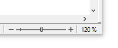
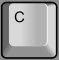
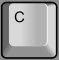

5. Copy and paste¶
In this exercise we are going to learn how to copy and paste text and images in Writer.
We open a new text document in Writer.
Now we are going to change the scale factor of the window so that we can better see the text as we type it.
In the bottom right part of the window, we will change the scale factor to 120% by clicking the - button or the + button.

- We look for information on Wikipedia about an inventor, for example Nikola Tesla.

We select the first paragraph of text from Wikipedia and copy it by holding down the control key
 and then pressing the C key .
and then pressing the C key .Another way to copy is to select the text, right-click and select copy.

Once the text has been copied, we return to Writer and paste the text by holding down the control key
and pressing the V key  .
.Another way to paste the text is to right-click and select paste.
Once pasted, we will see that the text appears with links to other web pages. The links will be seen in blue underlined color.

So that the links do not appear, it is necessary to paste the plain text.
First we are going to undo the previous pasting with the undo button or with the key combination control
and Z  .
.Now we select in the menu
Edit... Paste special... Paste plain text.

We can also click with the right mouse button and select
Paste Special... Plain TextThe aspect of the text will be the following.
Finally we are going to copy the image of Tesla from Wikipedia.
First click with the right mouse button on the image and select
Copy imageThen click on the beginning of the text in Writer and paste the image with the right mouse button or by pressing the key combination control
plus the V key .The result will be the following.
Credits¶
El texto utilizado en este ejercicio está basado, con cambios, en el artículo de Wikipedia sobre Nikola Tesla, bajo licencia CC BY-SA 3.0, via Wikimedia Commons
Image used is from Napoleon Sarony, under Public Domain license, via Wikimedia Commons